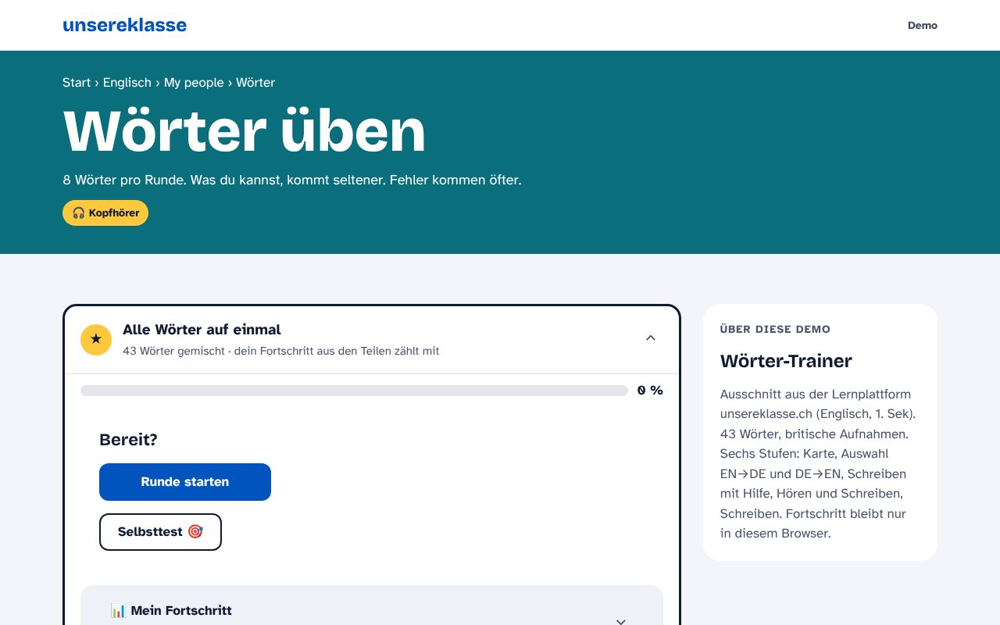
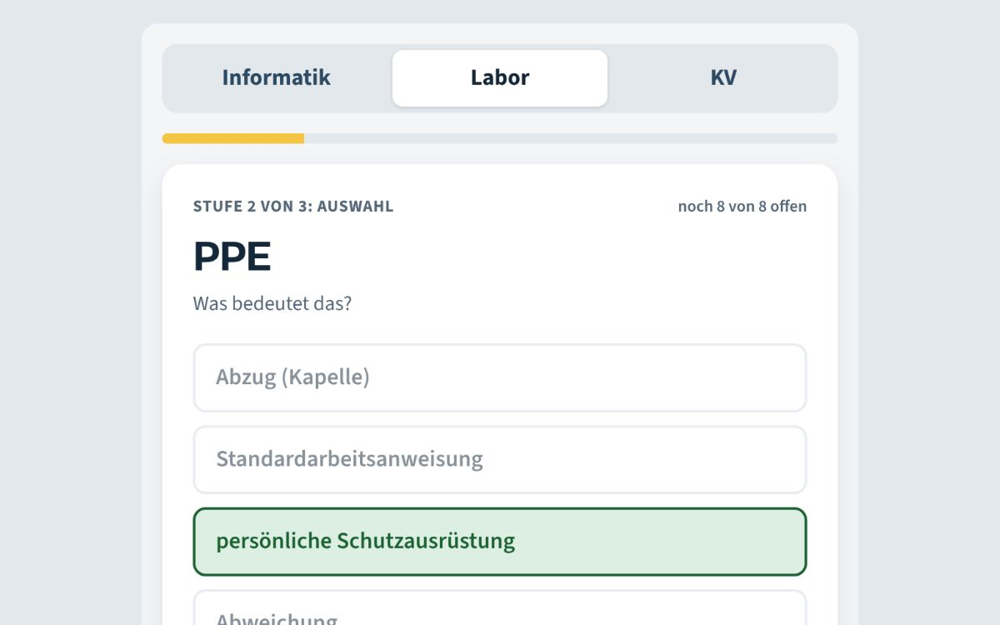

Bisher
Wörter-Trainer auf unsereklasse.ch
Meine Klassen üben Wörter in sechs Stufen, von der Karte bis zum Schreiben ohne Hilfe. Was sitzt, kommt seltener, Fehler kommen öfter.

Für Roche, als Prototyp spielbar
Fachbegriff-Trainer für Lernende
Fachbegriffe und Englisch, die Lernende im Betrieb täglich brauchen, in fünf Minuten auf dem Handy. Jeder Beruf hat seine eigene Liste. Welche Begriffe hineinkommen, entscheiden die Berufsbildnerinnen und Berufsbildner.
